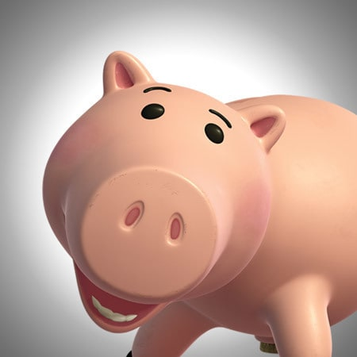

Se viene Toy Story 4!

Rex
Rex es un dinosaurio de juguete, que aparece en las películas animadas de la franquicia Toy Story. El actor original que hace la voz de Rex, es Wallace Shawn. Rex es un tiranosaurio de juguete, grande, verde y hecho de plástico. Rex sufre de ansiedad, un complejo de inferioridad y la preocupación de que no es lo suficientemente aterrador. El peor temor de Rex (después de Sid), es que Andy lo reemplace por un tiranosaurio más aterrador. Él está entre los más grandes juguetes de Andy, y se representa a menudo como el más pesado. Aunque Rex sea un dinosaurio de juguete, no le gusta la confrontación y en sensible en la naturaleza.

Ham
Ham es una alcancía de cerdo, que aparece en las películas animadas de Toy Story, como uno de los personajes centrales. Tiene un corcho en el vientre en vez de un tapón. Él y el Señor Cara de Papa parecen ser los mejores amigos durante la primera entrega, ya que a menudo se les observa jugando videojuegos, como Battleship. De todos los juguetes, se muestra que tiene el mayor conocimiento del exterior, a menudo muy familiarizado con diversos aparatos que se le muestran. Tiene muy buena relación con todos los demás juguetes, a pesar de que discute muy a menudo con Rex. Su doblaje original es realizado por John Ratzenberger, a quien se le hace una especie de homenaje con el personaje, debido a los conocimientos que adquiere éste.